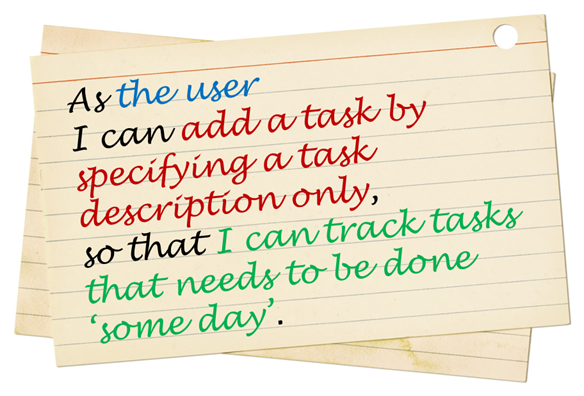

The objective of this deliverable is to make you do requirements analysis for your product using
techniques covered in Lecture 3.

While all those techniques can be applied to your project, here are the ones we are going to use:
-
Step 1: Brainstorm user stories. These represent requirements.
-
e.g.
As a user I can add a task by specifying a task description only, so that I can record tasks that need to be done
‘some day’.
As a user I can find upcoming tasks, so that I can decide what needs to be done soon.
As a user I can delete a task, so that I can get rid of tasks that he no longer cares to track.
As a new user I can view more information about a particular command, so that I can learn how to use various
commands.
As an advanced user I can use shorter versions of a command, so that type a command faster.
Note how the story covers who (the user), what (the functionality) and why (the value) aspects.
-
It is ok to have more user stories than you can deliver in the project.
-
Step 2: Survey existing products. See how well existing products meet Jim's needs.
-
Select a few competing products to study. e.g. Google Calendar Quick Add feature, Todo.txt, Fantastical
etc. Each person should study at least one existing product. Identify strengths and weaknesses of the
product w.r.t. how well it can cater for Jim’s requirements. .
-
Note: Don’t get discouraged if an existing product meets Jim’s needs quite well. We are
trying to learn SE, not sell a product.
-
After looking at existing products, you may want to go back and revise some of the user stories.
-
Step 3: Conceptualize the product as a user guide:
-
Divide user stories into two categories:
- likely: You hope to implement these features by V0.5.
- unlikely: Nice-to-have features that you may implement if you have time.
-
Based on the likely user stories, specify the product you are going to build, in the form of a user guide. Yes,
strangely enough, in this project we draft the user guide before we build the product. This will help you/us
visualize the final product before you start implementing it.
-
Remember to include the exact command format because it is the core part of your UI.
Use
this file as a template.
Sections to include:
-
Cover page:
In particular, indicate the different roles played and responsibilities held by each team member. You can
reassign these roles and responsibilities later in the project, if necessary.
Roles and responsibilities
Roles imply aspects you are in charge of and responsible for. E.g., if you are in charge of documentation,
you are the person who should allocate who should write which part, ensure the document is in right format,
ensure consistency etc.
Here are some typical roles:
-
Team lead : Responsible for overall project coordination.
-
Documentation (short for ‘in charge of documentation’): Responsible for the quality of various project
documents.
-
Testing: Ensures the testing of the project is done properly and on time.
-
Code quality: Looks after code quality, ensures adherence to coding standards, etc.
-
Deliverables and deadlines: Ensure project deliverables are done on time and in the right format.
-
Integration: In charge of versioning of the code, maintaining the code repository,
integrating various parts of the software to create a whole.
-
Scheduling and tracking: In charge of defining, assigning, and tracking project tasks.
-
[Tool ABC] expert: e.g. Eclipse expert, Git expert, etc. Helps other team member with matters related to
the specific tool.
-
You may define additional roles.
Please make sure each of the above roles are assigned to one person in the team. It is OK to have a ‘backup’ for
each role, but you should still have one person who is unequivocally the main person playing that role.
-
User guide:
Describe what the product would be like when it is submitted at the end of the semester. Starting from the
time user starts using the product for the first time, describe how the user uses the product to accomplish
various tasks.
Here are some ‘quick start guides’ you can look at for inspiration when writing your user guide:
Collate project (recommended),
GCal quick add feature, iPhone :How to get started,
TEAMMATES (for instructors)
Use UI prototypes/sketches if necessary. They can be simple sketches drawn on whiteboard/paper and
scanned/photographed or created using a tool such as PowerPoint, HTML, or Balasmiq.
State what you honestly believe you can do, based on information you have at this point. You will not be
penalized if you cannot deliver what you proposed to deliver. It is OK to tweak the project scope along the
way.
Specify the command format in detail as it is an important part of the product functionality.
-
Appendix A: User stories
-
Appendix B: Non-functional requirements
Note: User stories capture functional requirements. What are the non-functional
requirements of your project? Many of the project constraints mentioned above are NFRs. You can add more.
e.g. performance requirements, usability requirements, scalability requirements, etc.
-
Appendix C: Product survey
suggested length: 3-4 pages excluding cover page and appendices (see the ‘Module policies’ section below
for our policy on ‘suggested length’)
submission: Name the file as "["team id"][V0.0]".pdf
(e.g. [w09-1j][V0.0].pdf) and
upload to the appropriate IVLE folder. No doc or docx files please.
Note that there are no spaces
anywhere in the file name. Only one member need to upload the proposal to IVLE.
As always, you can contact your project tutor early and get feedback in advance. There is no need to wait till
the deadline.
evaluation: Can earn 15++ points